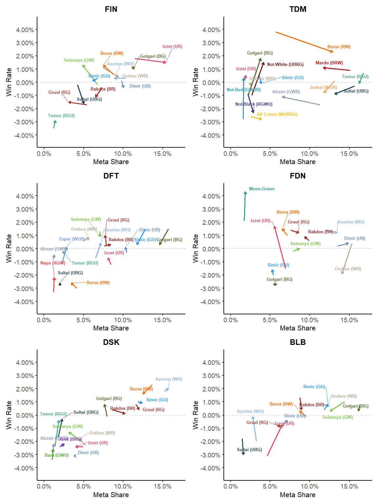

Intro to Magic Drafts
Magic: The Gathering is a popular trading card game known for its complexity and strategic depth. One popular format is "draft", in which players build decks from a limited pool of cards by taking turns selecting one card at a time. Wizards of the Coast releases new sets of cards every few months, which keeps the game fresh and adaptive.
Cards are fall into five different colors (white, blue, black, red, and green) which players can mix to create different strategies for their decks. Most decks contain 2-3 colors.
A core strategic component of drafting involves picking a strong color pair while avoiding the color pairs of the people drafting next to you; you want to play good cards but it sucks when the player before you snags the card you wanted. Once people pick their cards, players face their decks off in head to head matches to determine the winner, typically for low monetary stakes.
Metagame Analysis
For each limited set, we as a community love to analyze which decks perform the best. We often refer to a variety of strong archetypes as a sign of "balance." However, win rates alone don’t tell the full story; ignoring meta share leaves out the most important piece of the puzzle.
As more players adopt a winning strategy, that strategy’s win rate tends to drop. Cards become more contested, and players might force the archetype from suboptimal openings. If players as a group find the best strategies, win rates should naturally start to converge.
I charted win rate vs. meta share using data from 17Lands for the six most recent draft formats. I compared week 1 to week 6 (except FIN, which uses week 5), centering each on the average win rate of all 17Lands users during that window. Each arrow represents the shift in performance and popularity of a deck over time. Balance should account for distance in this two dimensional space as opposed to just looking at win rates. Top tier decks fall to the upper right.
Plot: Win Rate vs. Meta Share Comparing Week 1 and Week 6 of Each Format
Analysis
It’s important to note that 17Lands players are often more tuned into the meta than the broader player base. Their preferences can shift faster in week 1 or show earlier adoption of rising archetypes.
Overall, we see some convergence in win rates over time, especially in DFT and BLB, where most decks land near the average by week 6. More importantly, these charts often reflect how the formats felt to draft. Let’s look at each set:
FIN: Izzet stands out as the top mover and best-performing deck. White may have been slightly underdrafted, as its pairs show consistently above-average win rates.
TDM: A volatile chart. Boros surged while Abzan dropped. Golgari manages a high win rate despite low play rate, suggesting it was underappreciated.
DFT: Strong win rate balance with few meta changes, though 17Lands users already biased heavily towards the top three decks in week 1. Perhaps casual players leaned more into top-performing green decks, lowering their win rate without 17Lands users increasing play rates.
FDN: Orzhov appears overdrafted; Izzet may have been figured out (or abandoned). Simic and Golgari underperformed. I didn’t play this set, so I can’t speak to whether it felt this way.
DSK: Less balanced overall. Azorius dominated throughout, while only six decks made up most of the meta. Underperforming archetypes (WB, UR, UB, GW) likely should’ve been avoided earlier.
BLB: Another format that ended balanced. You can see where players figured out how to draft Izzet and Azorius. Selesnya's slight overplay is also evident.
I find this method of analysis more useful than raw win rates alone. Knowing that one deck wins 2% more often than another isn’t that useful, but seeing that it's played twice as often actually feels a bit more relatable. A deck with 15% meta share and an average winrate is likely a better option for speculation than a deck with +1% winrate and a 5% meta share.
Of course, this is all averaged data, and we all have our personal biases and preferences (I’ll keep forcing UB 50% of the time no matter what the numbers say!).
Anyways, that's all I have right now. Let me know if you have ideas or comments!
--Cameron B